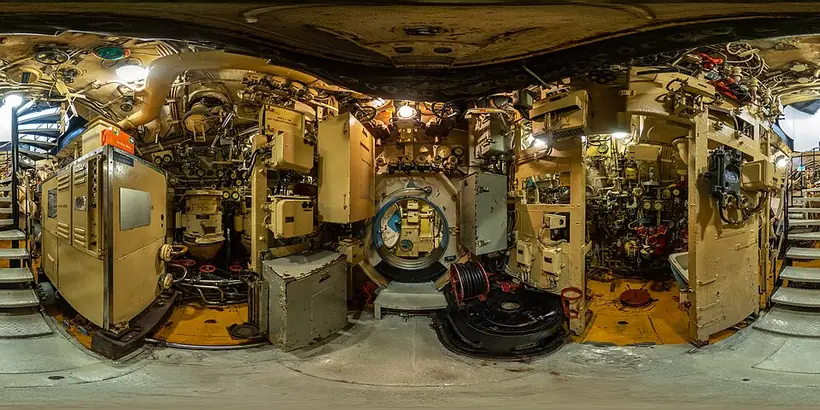
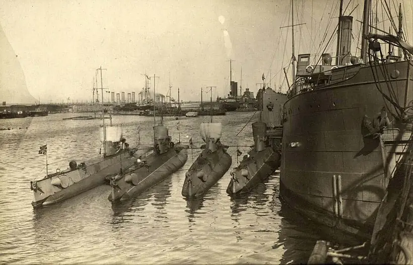
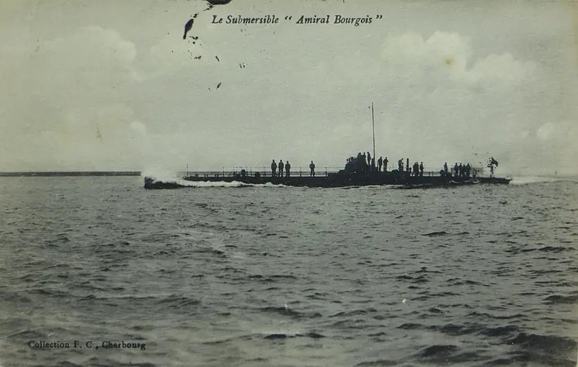

The operation
In 1968 the Soviet ballistic-missile submarine K-129 sank in the Pacific, about 3,000 km northwest of Hawaii. The CIA, using acoustic data, located it and decided to attempt a recovery — a feat never attempted at that depth.
Maps, diagrams and images






The ship Glomar Explorer was built with a cover story: Howard Hughes was said to be mining manganese nodules from the seabed. It carried a giant claw designed to reach 5,000 metres. In 1974 it lifted part of the submarine; the operation was partly successful, and the details remained secret for decades.
The aftermath
The press learned of the attempt in 1975, and the CIA responded with what became known as the 'Glomar response' — neither confirming nor denying. Documents were declassified in 2010, and the recovered material is said to have included codebooks and two nuclear torpedoes.
Documented: the sinking, the location, the ship and the cover story.
Documented: the recovery attempt and its partial success.
Documented: the declassification, from 2010.
Not established: some details of what was recovered.
The label: documented — a real conspiracy, with a real cover story.
Why it is in the archive
Because it is the best evidence that real covert operations exist, and that they look nothing like the ones in the rest of this shelf.
Open resources on this topic
- BookCIA Reading Room 0005301269: PROJECT AZORIAN: THE STORY OF THE HUGHES GLOMAR EXPLORER — CIA Reading Room · 1978 (Internet Archive, free to read)
- BookProject Azorian: The CIA and the Raising of the K-129 — ['Norman Polmar', 'Michael White'] · 2012 (Internet Archive, free to read)
- PapersOpen-access articles: DOAJ · PubMed Central · Internet Archive Scholar
- BooksPublic-domain and borrowable copies: Open Library · Project Gutenberg · Google Books
Cite this page
Momin, S. (2026). Project Azorian. The Larger World Archive. https://drsamonline.github.io/LARGE_GLOBE/project-azorian.htmlMomin, Sohil. “Project Azorian.” The Larger World Archive, 2026, https://drsamonline.github.io/LARGE_GLOBE/project-azorian.html.Momin, Sohil. “Project Azorian.” The Larger World Archive, 2026. https://drsamonline.github.io/LARGE_GLOBE/project-azorian.html.@misc{project2026project,
author = {Momin, Sohil},
title = {Project Azorian},
year = {2026},
howpublished = {The Larger World Archive},
url = {https://drsamonline.github.io/LARGE_GLOBE/project-azorian.html},
note = {Last reviewed 20 November 2026}
}Last reviewed 20 November 2026 · Corrections policy · this page is not peer reviewed
Sources for this page
- Wikipedia, “Project Azorian” — the operationen.wikipedia.org
- Wikipedia, “Soviet submarine K-129 (1960)” — the targeten.wikipedia.org
- Wikipedia, “Glomar response” — the phrase it produceden.wikipedia.org
- Wikipedia, “Central Intelligence Agency” — the agencyen.wikipedia.org